A enguia colossal: as cabeças
03/11/2026 · a 1ª rodada da arte da serpente grande (spec specs/2026-11-03-serpente-grande-enguia-design.md) · nada instalado.
Você: "crie primeiro o modelo no pixellab para vermos como vai sair essa cabeça. Assim escolhemos antes para ter uma noção de como ela vai ficar", e "a enguia precisa ser uma enguia dark sci-fi bio mecanica bem desenhada".
Como saíram: no PixelLab (o Pro), com quatro conceitos diferentes de cabeça e não variações de uma só, 9 candidatas cada, 40 gerações. Usei a cabeça azul da de 3 cabeças como referência de ESTILO (o material que ela herda: o casco preto-oleoso, as placas, a luz só nos pontos de energia), sem referência de forma, para não prender o desenho.
Conferido ampliado: as 36 saíram de perfil e viradas para a esquerda (nenhuma vista de cima). Fora da escolha: três moreias que copiaram a cabeça azul da referência (0, 5 e 8) e a fusão 0 (toda cinza, sem luz). Algumas moreias tinham uma barra branca solta embaixo, um defeito do gerador; nas escolhidas ela foi apagada, sem tocar no desenho.
Os quatro conceitos
A — a moreia blindada
Cabeça longa e afilada, com dentes de agulha, olho azul fundo, guelras verdes e respiros laranja no pescoço. O pescoço desce em curva, o que combina com o posto dos canos (o corpo descendo pela borda direita).
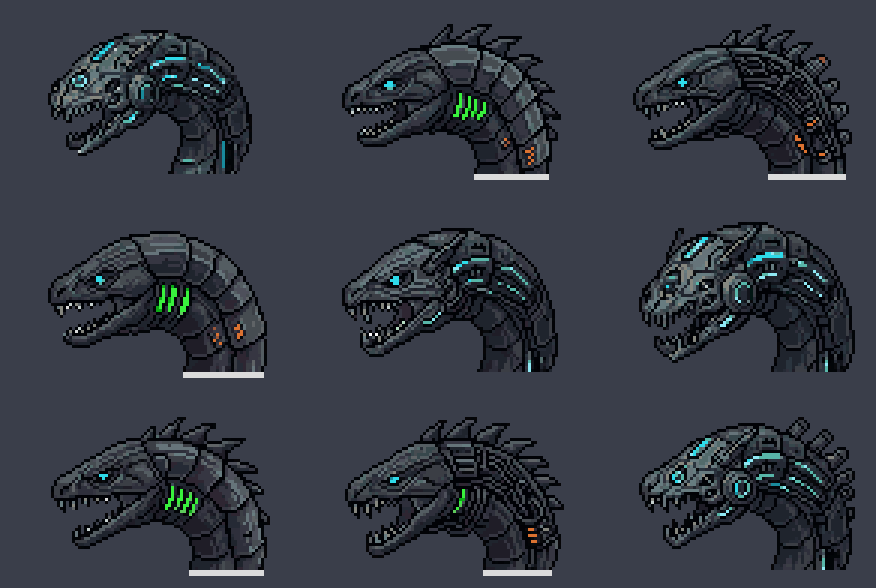
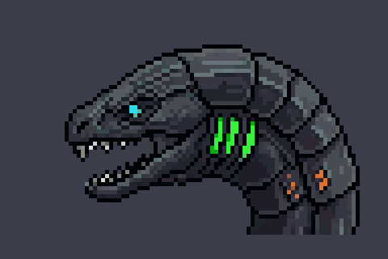
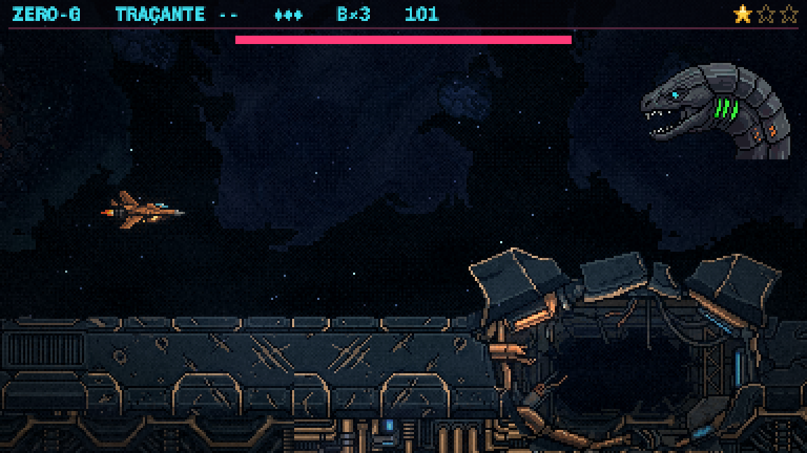
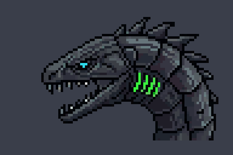
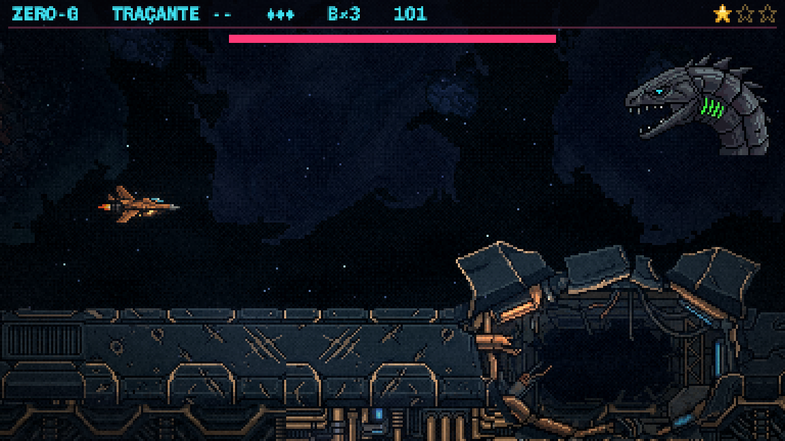
B — a engolidora
Inspirada na enguia-pelicano das profundezas: a mandíbula enorme, a garganta escura com um núcleo laranja aceso no fundo, olho azul pequeno e respiros verdes no pescoço. É a mais "horror do fundo do mar", e a boca grande serve ao cuspe das sementes do Eco.
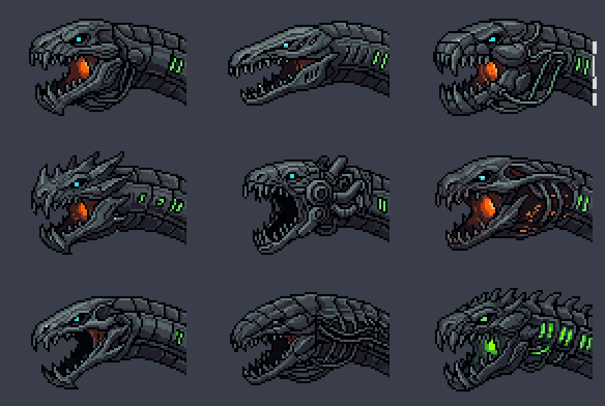
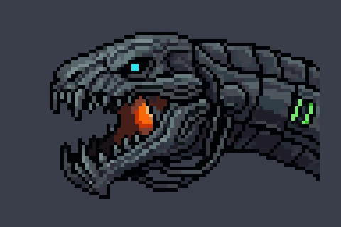
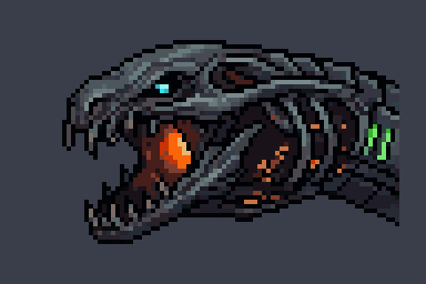

C — a lança
Inspirada na enguia-fita: o crânio fino como uma ponta de lança e uma crista de placas finas no dorso. É a mais elegante e rápida de silhueta, e a menos ameaçadora; a boca é pequena.
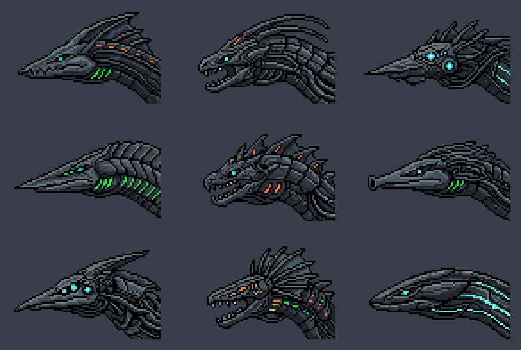
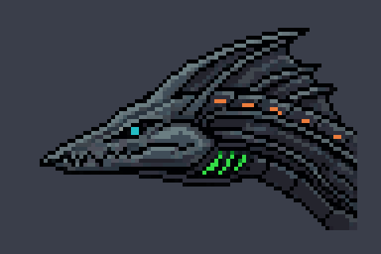
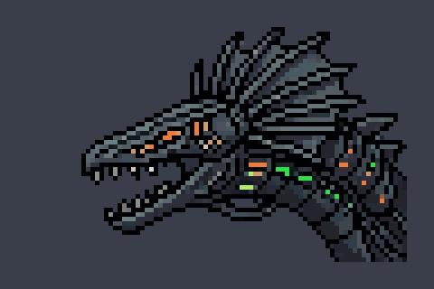
D — a fusão das três
A cabeça que nasce das três fundidas, com cada cor num traço próprio: o olho AZUL, as guelras VERDES e um canhão LARANJA na garganta, embaixo da mandíbula. Os chifres curtos para trás e a costura de placas lembram as três cabeças de antes.
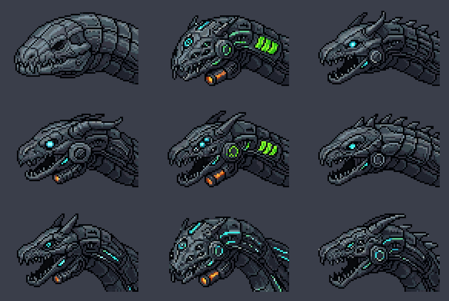
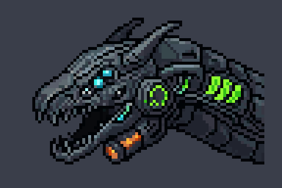
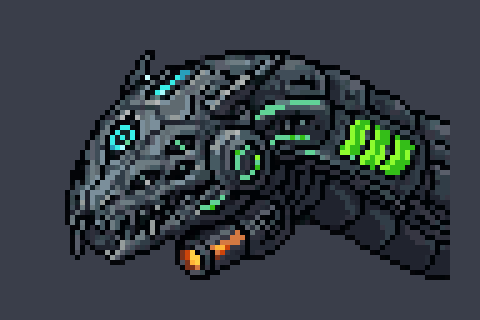
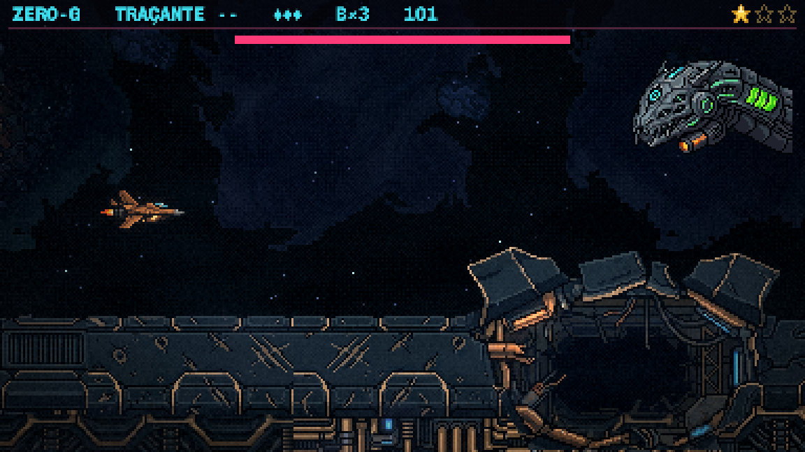
A minha recomendação
D4, a fusão. É a única em que as três cores são três peças diferentes da cabeça: o olho da azul, as guelras da verde e o canhão da laranja. O jogador lê, sem texto, que as três viraram esta. A boca aberta serve ao cuspe do Eco, e o canhão da garganta é um bom lugar para a carga dos canos acender.
A segunda opção é a B0, a engolidora: é a mais enguia e a mais assustadora, mas fica só com o laranja forte e perde a história das três.
Dá para misturar numa 2ª rodada, por exemplo a cabeça da D4 com a crista da C7 ou o pescoço oco da B5.
Para você decidir
- Qual cabeça segue? Uma das oito acima, ou uma mistura (diga o quê de qual).
- O tamanho na tela (cerca de 3× a nave, no posto dos canos): está bom, ou ela deve ser maior ou menor?
Depois da escolha: a enguia INTEIRA a partir dessa cabeça (de perfil, com o corpo e a cauda), de onde saem os anéis. A maquete do movimento em blocos vem em seguida (spec §7).